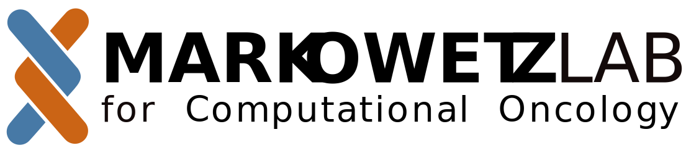

The Hitchhikers Guide to the FMLab


Welcome to the FMLab
Hello I am Florian.
This document, The Hitchhiker’s Guide to the Markowetz lab, describes our ‘lab culture’, the way we do things. I started writing it a few years after starting this lab, because I wanted new team members -like you- to have the best possible start in the lab.
Every lab, every human community, has rules and expectations that are often implied and un-spoken. As a new team member you might be unsure how things work and what is expected of you. This is why I will try to be explicit about what I expect of you and what you can expect of me.
In this first chapter I will introduce some of the core ideas, before the next chapters (which were written by different groups of team members) go into more details and specifics.!
Our Mission:
We build technologies for doctors to make better decisions faster!
This means: our group is medical oriented, vary applied (a.k.a. "translational"), and that we take on projects that have a clear path to real-world impact. On the flip side, we do relatively little fundamental or 'blue sky' research.
The sucess of our lab is built in shared core values:
- Collaboration - we work in a close scientific network and we contribute proactively to all collaborations;
- Creativity - we do things differently -better, we think- and our approaches and questions are unique; we don’t just do what everyone else is doing;
- Generosity - we are generous with time and support. We help each other and collaborators (without, say, immediately asking for an authorship in return);
- People over projects- we shape the project to fit your strengths and ideas;
- Rigour- we do things right. We walk the extra mile. If it looks like more work it probably is the right thing to do;
- Transparency- we share code, drafts, data, and any other information freely inside and outside the group. We talk openly about your plans and projects;
When you work with me, this is what you can expect from me:
- I see this group as an incubator for your success and I will teach you the skills you need for your career.
- I will do my best to adapt my style to your needs and personality.
- I play with open cards and will discuss any issues with you as soon as they arise.
- I will work with you to define your project and adapt it to your strengths and ideas - even finding you a new one, if the first one doesn’t really fit.
- I will design your project to be fully yours - there will never be another person competing with you on the same project.
- I will support you regardless of your career choice: you will not be treated differently whether you want a career in science or industry or start-up or policy or sci comm.
- I will be available to meet with you and you have different options how to
chat:
- There are weekly group and team meetings for more technical discussions.
- Every 6 months we will have a 1-to-1 strategy meeting, where take a bird-s-eye view of how things are going and the dynamics in the lab.
- You can always knock on my door or schedule a meeting through my PA Sabina.
This is what I expect from you:
-
You show initiative at the right level: You don’t wait until you are told, but you also don’t go rogue - rather, you proactively come up with ideas and at the same time keep me in the loop throughout the process. Particular areas of initiative are:
- You own your project. You take leadership in it and shape its direction with your ideas.
- You are an active contributor to our lab meetings and the institute meetings, delivering presentations and contributing to the discussions.
- You take an interest in the other team members and generously help them if you can.
- You use the training opportunities the institute/uni has for you.
- You build your own network with other scientists at the institute and the wider Cambridge community.
- You participate to this group beyond its research (eg by planning a lab retreat).
-
I expect you to read widely and know your field inside-out. I expect you to think about the impact your project can have on the field and to focus your efforts on key central problems rather than marginal improvements.
-
You embrace ”The Beach”. Our lab is a beach: a place where the dry meets the wet - cheesy, I know. You learn the skills to effectively communicate with ‘the other side’ and use your skills to help them with their problems.
-
You manage upwards. You speak about your needs and how I can help you best. You make yourself heard even when I look busy (don’t be afraid to knock on my door or schedule a meeting through Sabina). It you think that I am unaware of an important issue in the lab, please tell me.
Further reading:
This document is part of a larger collection I would like you to read and think about:
- My paper ’You are not working for me; I am working with you’, which tells you more about how the lab started und my first experiences leading a team. The lab has changed over time, but you will see that the core is still the same.
- My paper ‘Five selfish reasons to work reproducibly’, which focuses on one of the key beliefs of our lab - that science is better if it is transparent and code/date are shared freely and widely.
- My blog post ’Why science needs continuous leadership support’, which contains some of my general ideas on leadership and the different perspectives different lab members have.
- Kearns and Gardiner, ’The care and maintenance of your supervisor’, which should drive home the message that I need you to be an active participant in our partnership.
Which of these ideas resonate with you? What do you think is surprising? Where would you like to learn more details? What other expectations/wishes/dreams/plans do you have? What do you disagree with?
We will discuss these questions in a 1-1 meeting that will happen about 4 weeks after you joined the lab. In this meeting, we will also cover how your start in the lab was, what support you need, how your project looks like and what the first steps will be.
Get Started
Onboarding
To help you get started, we have compiled a list of essential resources and information for. This quick start guide includes links to get up and running. The rest of the handbook contains more detailed sections on lab expectations, communication policies, lab meetings/notebooks, ordering policies, details on our lab philosophy and general policies. You aren't expected to read everything, just when its relevant to you.
...
Your Contribution to the group as...
A Postdoc
Your Expectations (a.k.a. How to Measure Success) Cultivation and review of scientific questions
- Generate novel and interesting scientific questions to build on existing knowledge and projects within the group.
- Learn to effectively communicate and critique new scientific questions and determine their merit.
- Know when to pursue or abandon a scientific question. This applies to both your own and those of others (PhD students under your supervision, etc.) ....
A Student
Your Expectations (How to Measure Success) "Have a meaningful PhD with good output (first-author papers,...) while having a good time"
Developing your Career Path
A thesis you are proud of At least one first author paper Maybe a scholarship/enrichment scheme/internship ....
A Staff Scientist
You have just joined as a staff scientist. Here are the expectations we have of you and the expectations you can have from the lab.
.....